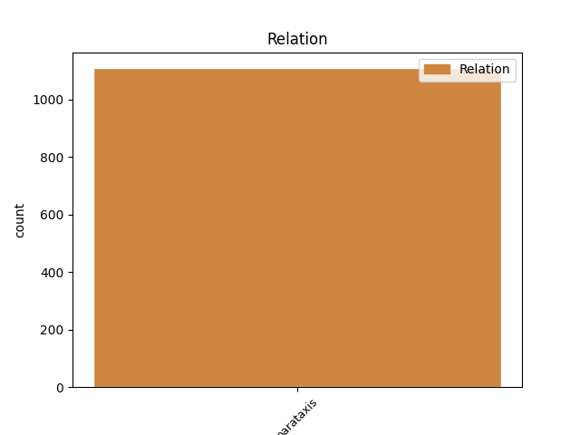
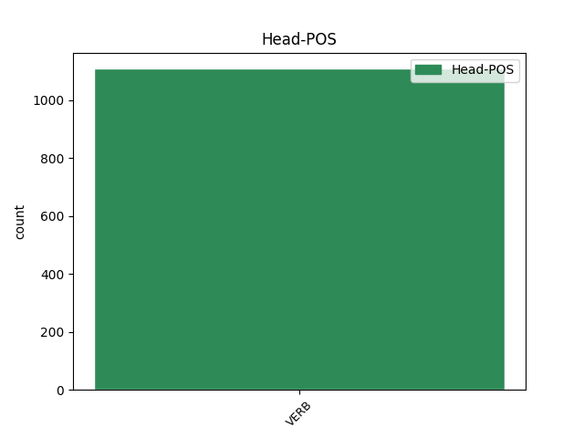
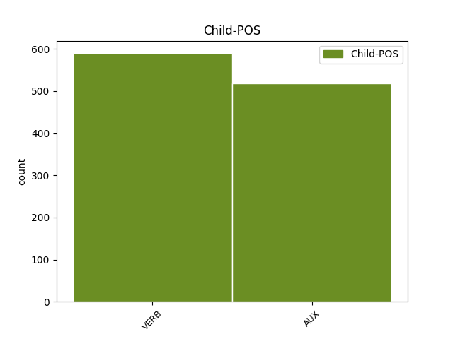

Distribution of features within this leaf



Agreement Rules sorted by frequency.
- When the dependent token is the parataxis(parataxis) of the head token, and the head token is AUX
1 Cînd _ _ _ _ 0 _ _ _
2 muerea _ _ _ _ 0 _ _ _
3 să _ _ _ _ 0 _ _ _
4 va _ _ _ _ 0 _ _ _
5 dovedi _ _ _ _ 0 _ _ _
6 preacurvă _ _ _ _ 0 _ _ _
7 , _ _ _ _ 0 _ _ _
8 sau _ _ _ _ 0 _ _ _
9 bărbatul _ _ _ _ 0 _ _ _
10 ei _ _ _ _ 0 _ _ _
11 preacurvariu _ _ _ _ 0 _ _ _
12 , _ _ _ _ 0 _ _ _
13 să _ _ _ _ 0 _ _ _
14 să _ _ _ _ 0 _ _ _
15 pedepsească _ _ _ _ 0 _ _ _
16 precum _ _ _ _ 0 _ _ _
17 s _ _ _ _ 0 _ _ _
18 -au avea AUX Vaip3s Mood=Ind|Number=Sing|Person=3|Tense=Pres 0 _ _ _
19 zis _ _ _ _ 0 _ _ _
20 , _ _ _ _ 0 _ _ _
21 ( _ _ _ _ 0 _ _ _
22 vezi vedea VERB Vmsp2s Mood=Sub|Number=Sing|Person=2|Tense=Pres|VerbForm=Fin 18 parataxis _ ref=PART_V_CAP_10.4
23 pentru _ _ _ _ 0 _ _ _
24 căsătorie _ _ _ _ 0 _ _ _
25 capul _ _ _ _ 0 _ _ _
26 a _ _ _ _ 0 _ _ _
27 16 _ _ _ _ 0 _ _ _
28 partea _ _ _ _ 0 _ _ _
29 43 _ _ _ _ 0 _ _ _
30 ) _ _ _ _ 0 _ _ _
31 . _ _ _ _ 0 _ _ _
Disagree Examples:
1 Că _ _ _ _ 0 _ _ _
2 însuși _ _ _ _ 0 _ _ _
3 David _ _ _ _ 0 _ _ _
4 zis _ _ _ _ 0 _ _ _
5 -au avea AUX Vaip3s Mood=Ind|Number=Sing|Person=3|Tense=Pres 0 _ _ _
6 în _ _ _ _ 0 _ _ _
7 Duhul _ _ _ _ 0 _ _ _
8 Sfînt _ _ _ _ 0 _ _ _
9 , _ _ _ _ 0 _ _ _
10 zise zice VERB Vmis3s Mood=Ind|Number=Sing|Person=3|Tense=Past|VerbForm=Fin 5 parataxis _ ref=MARC12.36
11 Domnul _ _ _ _ 0 _ _ _
12 Domnului _ _ _ _ 0 _ _ _
13 mieu _ _ _ _ 0 _ _ _
14 : _ _ _ _ 0 _ _ _
15 Şăzi _ _ _ _ 0 _ _ _
16 de- _ _ _ _ 0 _ _ _
17 a _ _ _ _ 0 _ _ _
18 dereapta _ _ _ _ 0 _ _ _
19 Mea _ _ _ _ 0 _ _ _
20 până _ _ _ _ 0 _ _ _
21 cînd _ _ _ _ 0 _ _ _
22 voiu _ _ _ _ 0 _ _ _
23 pune _ _ _ _ 0 _ _ _
24 pizmașii _ _ _ _ 0 _ _ _
25 tăi _ _ _ _ 0 _ _ _
26 scaun _ _ _ _ 0 _ _ _
27 supt _ _ _ _ 0 _ _ _
28 picioarele _ _ _ _ 0 _ _ _
29 tale _ _ _ _ 0 _ _ _
30 . _ _ _ _ 0 _ _ _
1 Ioan _ _ _ _ 0 _ _ _
2 mărturisi _ _ _ _ 0 _ _ _
3 de _ _ _ _ 0 _ _ _
4 El _ _ _ _ 0 _ _ _
5 și _ _ _ _ 0 _ _ _
6 strigă _ _ _ _ 0 _ _ _
7 , _ _ _ _ 0 _ _ _
8 zicând _ _ _ _ 0 _ _ _
9 : _ _ _ _ 0 _ _ _
10 Acesta _ _ _ _ 0 _ _ _
11 e fi AUX Vaip3s Mood=Ind|Number=Sing|Person=3|Tense=Pres 0 _ _ _
12 de _ _ _ _ 0 _ _ _
13 carele _ _ _ _ 0 _ _ _
14 ziceam _ _ _ _ 0 _ _ _
15 , _ _ _ _ 0 _ _ _
16 carele _ _ _ _ 0 _ _ _
17 au _ _ _ _ 0 _ _ _
18 venit _ _ _ _ 0 _ _ _
19 după _ _ _ _ 0 _ _ _
20 mine _ _ _ _ 0 _ _ _
21 , _ _ _ _ 0 _ _ _
22 înainte _ _ _ _ 0 _ _ _
23 -mi _ _ _ _ 0 _ _ _
24 fu fi AUX Vais3s Mood=Ind|Number=Sing|Person=3|Tense=Past 11 parataxis _ ref=IOAN1.15
25 pus _ _ _ _ 0 _ _ _
26 , _ _ _ _ 0 _ _ _
27 că _ _ _ _ 0 _ _ _
28 mai _ _ _ _ 0 _ _ _
29 întăiu _ _ _ _ 0 _ _ _
30 de _ _ _ _ 0 _ _ _
31 mine _ _ _ _ 0 _ _ _
32 era _ _ _ _ 0 _ _ _
33 . _ _ _ _ 0 _ _ _
1 Părinții _ _ _ _ 0 _ _ _
2 noștri _ _ _ _ 0 _ _ _
3 mâncară _ _ _ _ 0 _ _ _
4 mannă _ _ _ _ 0 _ _ _
5 în _ _ _ _ 0 _ _ _
6 pustie _ _ _ _ 0 _ _ _
7 , _ _ _ _ 0 _ _ _
8 cum _ _ _ _ 0 _ _ _
9 iaste fi AUX Vaip3s Mood=Ind|Number=Sing|Person=3|Tense=Pres 0 _ _ _
10 scris _ _ _ _ 0 _ _ _
11 , _ _ _ _ 0 _ _ _
12 " _ _ _ _ 0 _ _ _
13 pâine _ _ _ _ 0 _ _ _
14 den _ _ _ _ 0 _ _ _
15 ceariu _ _ _ _ 0 _ _ _
16 deade da VERB Vmis3s Mood=Ind|Number=Sing|Person=3|Tense=Past|VerbForm=Fin 9 parataxis _ ref=IOAN6.31
17 lor _ _ _ _ 0 _ _ _
18 să _ _ _ _ 0 _ _ _
19 mănînce _ _ _ _ 0 _ _ _
20 " _ _ _ _ 0 _ _ _
21 . _ _ _ _ 0 _ _ _
1 Răspunse _ _ _ _ 0 _ _ _
2 lor _ _ _ _ 0 _ _ _
3 Iisus _ _ _ _ 0 _ _ _
4 : _ _ _ _ 0 _ _ _
5 Au _ _ _ _ 0 _ _ _
6 nu _ _ _ _ 0 _ _ _
7 iaste fi AUX Vaip3s Mood=Ind|Number=Sing|Person=3|Tense=Pres 0 _ _ _
8 scris _ _ _ _ 0 _ _ _
9 în _ _ _ _ 0 _ _ _
10 leagea _ _ _ _ 0 _ _ _
11 voastră _ _ _ _ 0 _ _ _
12 " _ _ _ _ 0 _ _ _
13 Eu _ _ _ _ 0 _ _ _
14 ziș zice VERB Vmis1s Mood=Ind|Number=Sing|Person=1|Tense=Past|VerbForm=Fin 7 parataxis _ ref=IOAN10.34
15 Dumnezăi _ _ _ _ 0 _ _ _
16 sânteți _ _ _ _ 0 _ _ _
17 " _ _ _ _ 0 _ _ _
18 ? _ _ _ _ 0 _ _ _
1 Carele _ _ _ _ 0 _ _ _
2 cu _ _ _ _ 0 _ _ _
3 Duhul _ _ _ _ 0 _ _ _
4 Sfînt _ _ _ _ 0 _ _ _
5 , _ _ _ _ 0 _ _ _
6 pren _ _ _ _ 0 _ _ _
7 rostul _ _ _ _ 0 _ _ _
8 lui _ _ _ _ 0 _ _ _
9 David _ _ _ _ 0 _ _ _
10 , _ _ _ _ 0 _ _ _
11 coconului _ _ _ _ 0 _ _ _
12 Tău _ _ _ _ 0 _ _ _
13 ai avea AUX Vaip2s Mood=Ind|Number=Sing|Person=2|Tense=Pres 0 _ _ _
14 zis _ _ _ _ 0 _ _ _
15 : _ _ _ _ 0 _ _ _
16 Derept _ _ _ _ 0 _ _ _
17 ce _ _ _ _ 0 _ _ _
18 rînjiră rânji VERB Vmis3p Mood=Ind|Number=Plur|Person=3|Tense=Past|VerbForm=Fin 13 parataxis _ ref=ACTS_4.25
19 limbile _ _ _ _ 0 _ _ _
20 , _ _ _ _ 0 _ _ _
21 și _ _ _ _ 0 _ _ _
22 oamenii _ _ _ _ 0 _ _ _
23 să _ _ _ _ 0 _ _ _
24 învățară _ _ _ _ 0 _ _ _
25 deșarte _ _ _ _ 0 _ _ _
26 ? _ _ _ _ 0 _ _ _